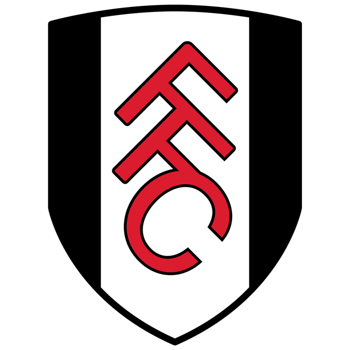

2022~2023 Premier League Ranking (Round 22___23년 02월 02일 04:00 기준)
Introduction to PL teams
- Arsenal
- Manchester City
- Newcastle United
- Manchester United
- Tottenham Hotspur
- Brighton and Hove Albion
- Fulham
- Brentford
- Liverpool
- Chelsea
- Aston Villa
- Crystal Palace
- Nottingham Forest
- Leicester City
- Leeds United
- West Ham United
- Wolveshampton Wanderers
- AFC Bournemouth
- Everton
- Southampton
4.MUFC
풀럼 FC , (영어: Fulham Football Club 풀럼 풋볼 클럽[*])는 잉글랜드 그레이터런던 풀럼을 연고로 하고 있는 프로 축구 클럽이다.
1879년 풀럼 세인트 앤드루스라는 교회 축구단으로 시작해 현재까지 이르고 있으며 1896년부터 현재 홈 구장인 크레이븐 코티지를 사용하고 있다.
2부 리그 우승 1회와 3부 리그 우승 3회, UEFA 인터토토컵 우승 1회의 기록을 가지고 있으며 메이저 대회에서의 우승 경력은 없다. 그러나 1975년 FA컵 결승, 2010년 UEFA 유로파리그 결승에 진출해 준우승을 한 경험이 있다. 또한 조니 헤인스를 비롯하여 조지 코헨, 보비 롭슨, 로드니 마시, 앨런 멀러리 등 위대한 영국 선수들을 배출한 클럽이기도 하다.
